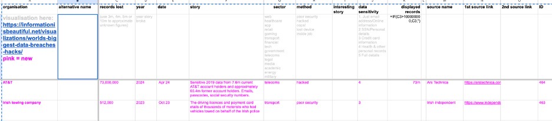
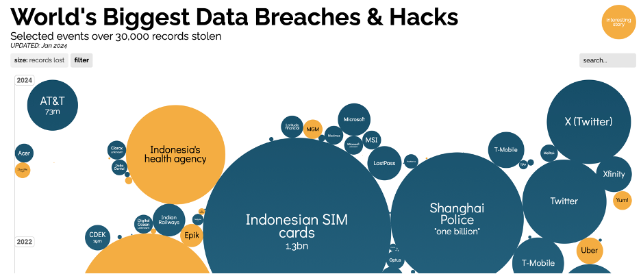
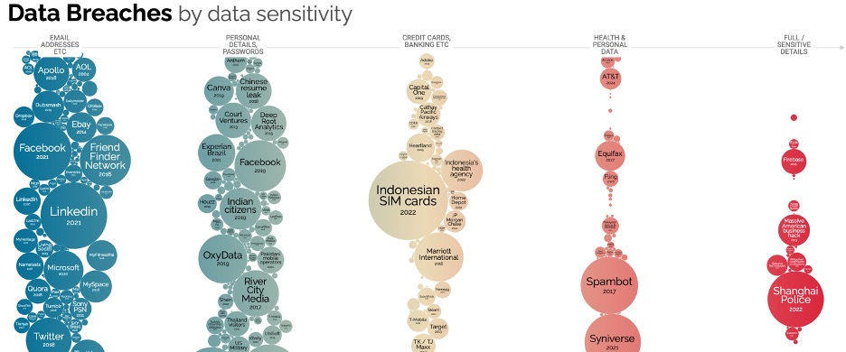
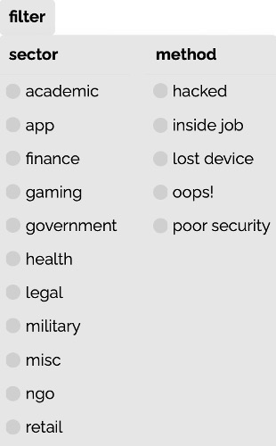

Data Breaches Visualization
What is the purpose of this visualization?
World’s Biggest Data Breaches and Hacks Data Visualization shows a variety of platforms and the data breaches they’ve suffered. A hover and hide effect expands each bubble, giving further details into these major hacks. It has Selected events over 30,000 records stolen, current as of Jan 2024. Breaches with interesting stories are also represented in the visualization.
What is the data?
Data set: Data Breaches and Hacks
Organization: The name of the organization or company that experienced the data breach.
Alternative Name: Any alternative name or nickname associated with the organization.
Records Lost: The number of records or pieces of information that were compromised during the breach.
Year: The year in which the data breach occurred.
Date: The specific date (month and day) when the data breach was reported or made public.
Story: brief description or summary of what happened during the data breach.
Sector: The industry sector to which the affected organization belongs (e.g., healthcare, government, tech).
Method: The method or means by which the data breach occurred (e.g., hacked, poor security, lost device).
Interesting Story: Any additional noteworthy information or details related to the data breach.
Data Sensitivity: The sensitivity level of the compromised data, categorized from 1 to 5 (1 being the least sensitive, and 5 being the most sensitive).
Displayed Records: The approximate number of records or pieces of information that were publicly disclosed or made available.
Source Name: The name of the source or publication that reported the data breach.
1st Source Link: The URL link to the first source providing information about the data breach.
2nd Source Link: The URL link to the second source providing information about the data breach.
ID: A unique identifier or reference number associated with each data breach entry.

How was the data collected?
Sources: IdTheftCentre: https://www.idtheftcenter.org, DataBreaches.net: https://www.databreaches.net, news reports
Who are the users that this visualization was made for?
Researchers, analysts, students, general public.
What questions do people want to ask about this data?
There are two types of visualizations:
- World’s biggest Data Breaches and Hacks over time

- Data Breaches by Data Sensitivity

Users can decide to ask questions regarding these and can also narrow down on the following sectors and methods of hacking in the filter.

Users can also decide to look at data by interesting stories.
How can they find the answers with this tool?
Users can find the answers with this tool by hovering over the different clouds, and then clicking on the article that comes up.
This is done by:

And then hovering over the cloud with the answers to your question, for example, let us say I want to know what information about the Indonesian SIM cards were leaked, I will hover to the relevant cloud, which immediately expands with information:

FInally, I can click the link to get to the article:

Show some example insights someone can arrive at using this tool
Some insights that someone can arrive at after using this tool include:
- There weren’t huge data leaks (< 1B) in the early years from 2000-2010, with the first major data leak being in 2013, by Yahoo.

What design choices are effective?
Effective design choices include:
- Word cloud sorted by size depending on the size of the data leak, along with displaying information about how big the data leak was after hovering over it.

- Arranging word clouds neatly at the end by severity of the data breached.
What are the limitations of this design- what can't someone do with this visualization?
Are there any design choices that are not effective, and how could they be improved?
The ability to filter data breach by country
The ability to filter by effect, i.e find out how the data breach impacted people, and what data breach impacted people the most.
This would most likely need to separate data collected by various forums on how the data breach affected their life.
The article can also be sited in the data to analyze the effects, such as “ “In 2018, [Kominfo] forced us to register for phone numbers using [government ID], promising us to be free of spam,” cybersecurity consultant Teguh Aprianto pointed out on Twitter. “[Not only] we are not free of spam, [but] registration data … are leaked and sold instead.” - taken from https://restofworld.org/2022/indonesia-hacked-sim-bjorka/, linked to indonesian sim cards.
Reasons for the Data Breach: This can likely be done by visiting the article associated with the word cloud and extracting the cause of their data breach—perhaps due to a neglected backdoor. Analyzing this information could assist in identifying potential reasons behind data breaches.